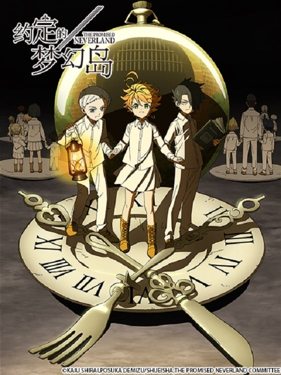

AnimeInterester
約定的夢幻島

故事簡介
仰慕的母親並非親生母親，跟我一起生活的他們也並非親兄弟姐妹。艾瑪、諾曼、雷，和媽媽與38個孩子住在一座名為「Gracefield House」的孤兒院裡，儘管沒有血緣關係，每天都過得很幸福。但是，他們的平凡生活卻在某一天突然宣告結束。知道真相之後，等著他們的命運將會是...？
製作人員
原作：白井カイウ / 出水ぽすか
導演：神戸守
系列構成：大野敏哉
角色設計：嶋田和晃
道具設計：板井寛樹
美術設定：池田繁美 / 大久保修一
美術設定：友野加世子 / 乗末美穂
美術監督：池田繁美 / 丸山由紀子
色彩設計：中島和子
攝影監督：塩川智幸
CG監督：福田陽
剪輯：松原理恵
音樂：小畑貴裕
音響監督：清水勝則
聲優名單
艾瑪：諸星堇
諾曼：内田真禮
雷：伊瀬茉莉也
伊薩貝拉：甲斐田裕子
克羅妮：藤田奈央
唐：植木慎英
吉爾妲：Lynn
克里斯提：河野日和
納特：石上静香
安娜：茅野愛衣
托馬：日野麻里
拉尼恩：森優子
柯妮：小澤亞李
各集標題
| 話數 | 標題 |
|---|---|
| 1 | 121045 |
| 2 | 131045 |
| 3 | 181045 |
| 4 | 291045 |
| 5 | 301045 |
| 6 | 311045 |
| 7 | 011145 |
| 8 | 021145 |
| 9 | 031145 |
| 10 | 130146 |
| 11 | 140146 |
| 12 | 150146 |